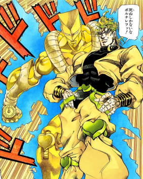

Uomo-Pistrelo2 è un film adattato da fumetto comico a fumetto comico e raffigura il nostro personaggio principale (L'uomo-pistrelo)
che deve baciare i criminali utilizzando i suoi fortissimi possenti poteri. Seguitelo alle 14 al vostro cinema locale.
Personaggi Principali Del Film2:
P-pinguini Ballerini

Questi pinguini famelici assetati di tip-tap abitano nelle fogne
della città di Gotham city, le loro zampe sono molto temprate dalle loro
continue battaglie danzanti. Incontrano per la prima volta l'Uomo-Pistrelo nelle
fogne della città, per poi avere una battaglia all'ultima mossa di danza
inoltre sono esperti nella manutenzione di perdite dei tubi del gas.
Cocco-RimaDrillo
Cocco-RimaDrillo è un altro dei supercattivi lavoratori part-time che
l'Uomo-Pistrelo si ritrova a combattere nelle fogne di gotham city!
Questo coccodrillo è il migliore in termine di rime e invita l'Uomo-Pistrelo a sfidarsi
con lui. Indossa delle cuffie e utilizza un microfono per distruggere in fretta i suoi
avversari.
DIO Brando! (di nuovo)

Dio Brando è tornato più forte che mai, in questo film esso non ha avuto
tanto tempo sullo schermo per essere amato dai fan, ma di sicuro ha giocato
una parte chiave nello scaraventare l'Uomo-Pistrelo nelle fogne di Gotham city!
Dopo aver messo l'Uomo-Pistrelo alle strette rapì il Joker per infliggere più dolore all'uomo-pistrelo.
ma lui non si fece abbattere, ma questa è la sua storia... Nel mentre l'Uomo-Pistrelo risaliva in superficie
Dio Brando torturava l'amato dell'uomo-pistrelo facendogli vedere le cose più oscene che esso abbia mai visto.
Arrabbiato per il "tradimento" dell'uomo-pistrelo, Dio Brando in questo film è il personaggio
più cattivo mai incontrato finora!